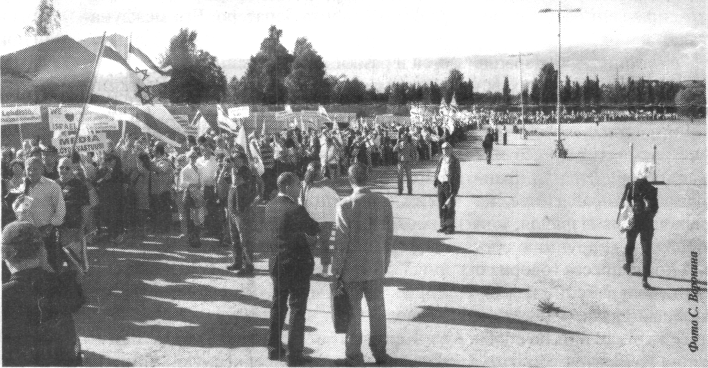

|

- Очерки психологии мировоззрения как основы просветительской практики ( Comments )
- От ничтожности к сопоставимости с Мирозданием или к вопросу о смысле существования человека ( Comments )
- Нобелевская лекция И.П.Павлова 'О русском уме' ( Comments )
- Проект "Бизнес, власть, общественность и СМИ в российской благотворительности" ( Comments )
- Дело Виталия Бунтова ( Comments )
- Дело Егора Новиковского ( Comments )
- Все мы сыны и дочери Человечества, но не собственность возомнивших о себе… ( Comments )
(все новости...)


| Главная-->Pro et contra-->Юдофобия-->Хосе Мария Аснар - испанский политик (2010) | ||
|
|
Каждый выбирает для себя женщину, религию, дорогу.
Дьяволу служить или пророку - каждый выбирает для себя.
Юрий Левитанский
Хосе Мария Аснар (Испания)
ЕСЛИ ИЗРАИЛЬ ПОЙДЕТ КО ДНУ, ТО КО ДНУ ПОЙДЕМ МЫ ВСЕ
Уже слишком давно в Европе стало немодно выступать в поддержку Израиля.
А уж после недавнего инцидента на борту корабля в Средиземном море, набитого антиизраильскими активистами, трудно придумать более непопулярный объект для поддержки.
В идеальном мире атака израильских морских коммандос на «Мави Мармара» не закончилась бы девятью погибшими и десятком раненых.
В идеальном мире солдат бы мирно приветствовали на корабле.
В идеальном мире ни одно государство, не говоря уже о недавнем союзнике Израиля, каковым является Турция, не выступило бы спонсором и организатором флотилии, единственной целью которой было создание для Израиля невозможной ситуации: поставить его перед выбором - отказ от собственной политики безопасности и прекращения морской блокады или риск вызвать гнев всего мира.
В наших взаимоотношениях с Израилем мы должны развеять красный туман злобы, который слишком часто блокирует нашу способность к нормальному суждению.
Здравый и сбалансированный подход должен учитывать следующие реальные факты:
во-первых, государство Израиль было создано по решению ООН. Поэтому его легитимность не должна ставиться под вопрос.
Израиль - это страна с глубоко укоренившимися демократическими структурами. Это динамичное и открытое общество, которое раз за разом отличается в области культуры, науки и технологии.
Во-вторых, благодаря своим корням, истории и ценностям, Израиль является полноправной страной Запада. В самом деле, это нормальная западная страна, находящаяся, однако, в ненормальных обстоятельствах.
Это уникальный случай на Западе - единственная демократическая страна, чье существование постоянно находится под вопросом с момента ее создания.
В первый момент она была атакована своими соседями, применявшими конвенциональное оружие войны.
Затем она оказалась перед лицом терроризма, нараставшего волна за волной и достигшего кульминации в виде террористов-самоубийц.
Теперь, с подачи радикальных исламистов и их сторонников, Израиль стоит перед лицом кампании делегитимации посредством международного права и дипломатии.
Шестьдесят два года спустя после своего создания Израиль все еще борется за свое выживание. Наказываемый ракетами с севера и с юга, находящийся перед угрозой уничтожения со стороны Ирана, стремящегося к приобретению ядерного оружия, прессуемый друзьями и врагами - Израиль, кажется, никогда не имеет ни минуты мира и покоя.
На протяжении многих лет все внимание Запада сосредоточено на мирном процессе между израильтянами и палестинцами, и это можно понять. Но если Израиль находится сегодня в опасности, а весь регион катится к все более тревожному и проблематичному будущему, то это не является следствием недостатка понимания сторонами того, как достичь решения этого конфликта.

Демонстрация 10 июня 2010 г. в Хельсинки в поддержку Израиля
Параметры любого предполагаемого мирного соглашения ясны, как бы трудно ни казалось обеим сторонам сделать последнее усилие для достижения соглашения.
Однако истинную угрозу региональной стабильности следует искать в подъеме радикального ислама, который видит в уничтожении Израиля воплощение своего религиозного предназначения, а в случае Ирана - выражена его претензий на статус регионального гегемона.
Оба эти явления представляют собой угрозу не только Израилю, но и всему Западу, да и всему миру в целом
Суть проблемы заключается в неоднозначной и ошибочной манере, в которой слишком многие западные страны реагируют на эту ситуацию.
Очень легко обвинять Израиль во всех беда Ближнего Востока.
Некоторые даже высказываются и действуют так, словно новое понимание с миром ислама может быть достигнуто, если мы только будем готовы принести в жертву еврейское государство.
Это было бы полным безрассудством.
Израиль - это наша передняя линия обороны в беспокойном регионе, который постоянно находится на грани погружения в хаос; в регионе жизненно важном для нашей энергетической безопасности, в виду нашей чрезмерной зависимости от ближневосточной нефти в регионе, который представляет собой первую линию борьбы против экстремизма. С.1. Продолжение на с.3
Окончание. Начало на с. 1
Если Израиль пойдет ко дну, ко дну пойдем мы все. Защита права Израиля на мирное существование в безопасных границах требует некоторой степени моральной и стратегической ясности, которая, как это слишком часто кажется, полностью исчезла в Европе.
Соединенные Штаты также демонстрируют тревожные признаки движения в этом направлении.
Запад проходит через период путаницы и потери представления о будущем мира.
В значительной степени эта путаница является следствием некоего мазохистского сомнения в нашей собственной идентификации, власти политкорректности, мультикультурности, ставящей нас на колени перед другими, и секуляризма, который - о, какая ирония! - ослепляет нас даже тогда, когда мы оказываемся перед лицом джихадистов, пропагандирующих самое фанатичное перевоплощение их религии.
Если мы оставим Израиль на произвол судьбы, именно в этот момент истории, то это послужит иллюстрацией того, сколь низко мы пали и сколь неуклонно наше скольжение вниз.
Этого нельзя допустить. Вдохновляемый сознанием необходимости восстановления наших собственных западных ценностей, выражая глубокую озабоченность в связи с волной агрессии против Израиля и сознавая, что мощь Израиля это наша мощь, а его слабость - это наша слабость, я принял решение выступить с новой инициативой Дружбы с Израилем.
Эту инициативу поддержали некоторые выдающиеся люди, в числе Дэвид Тримбл, Эндрю Роберте, Джон Болтон, Алехандро Толедо (бывший президент Перу), Марсело Пера (философ и бывший президент итальянского Сената), Фиамма Ниренштейн (итальянская писательница и политический деятель), финансист Роберт Агостинелли и католический интеллектуал Джордж Вигель.
В наши намерения не входит защищать любое отдельное политическое решение или любое конкретное правительство Израиля. Спонсоры этой инициативы, безусловно, будут в некоторых случаях не согласны с теми или иными решениями Иерусалима. Мы демократы, и мы верим в разные мнения.
Однако нас объединяет наша бескомпромиссная поддержка права Израиля на существование и на самооборону.
Для западных стран стоять на стороне тех, кто ставит под вопрос легитимность существования Израиля, играть в международных организациях в игры с жизненными вопросами безопасности Израиля, ублажать и задабривать тех, кто отрицает западные ценности, вместо того чтобы твердо стоять на защите этих ценностей - это не только страшная моральная ошибка, но и стратегическая ошибка первостепенной значимости.
Израиль - это фундаментальная часть Запада.
Запад является тем, что он есть, благодаря своим иудео-христианским корням. Если еврейский элемент этих корней будет уничтожен, а Израиль потерян, то и мы будем потеряны тоже. Нравится нам это или нет, наши судьбы сплетены неразрывно.
Хосе Мария Аснар
Примечание переводчика
Как это принято, британская «The Times», 17 июня 2010г., публикуя эту статью дала обычную справку:
Хосе Мария Аснар был премьер-министром Испании с 1996 по 2004гг.
Однако важно напомнить, при каких обстоятельствах правое правительство Аснара потеряло власть в 2004 г.
Аснар был верным сторонником борьбы администрации Буша с терроризмом, начатой после 11 сентября. «Мы находимся на стороне тех, кто борется с терроризмом», - отметил Аснар, выступая перед парламентариями страны за несколько месяцев до вторжения в Ирак сил антитеррористической коалиции.
Для раскола коалиции, в которой Испания играла немаловажную роль, террористам необходимо было добиться смены правительства. Они добились этого без большого труда, поставив испанцев на колени при помощи одного, но страшного теракта, унесшего жизни свыше 200 человек (еще свыше 1000 были ранены).
Теракт против пассажирских поездов в Мадриде
- своего рода «испанское 11 сентября», которое назвали самым страшным терактом за всю историю Европы
- был призван показать испанцам, что их ждет, если они не заставят свое правительство отказаться от участия в антитеррористической коалиции и вывести свои войска из Ирака. Испанцы немедленно сдались и привели к власти правительство социалистов под руководством Хосе Луиса Запатеро, обещавшего вывести войска из Ирака.
Практически, это стало началом конца Испании как свободной страны западной цивилизации, началом исламской «реконкисты» Испании.
Перевод и комментарий Элеоноры Шифрин
Газета «Дайджест-Е», Украина, Харьков, № 6(131), июнь 2010г., с.2
Оформил в э/в Бродский Дмитрий 12 мая 2011г.
blog comments powered by Disqus